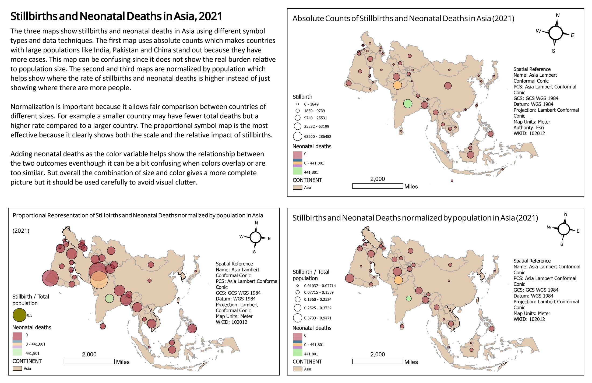
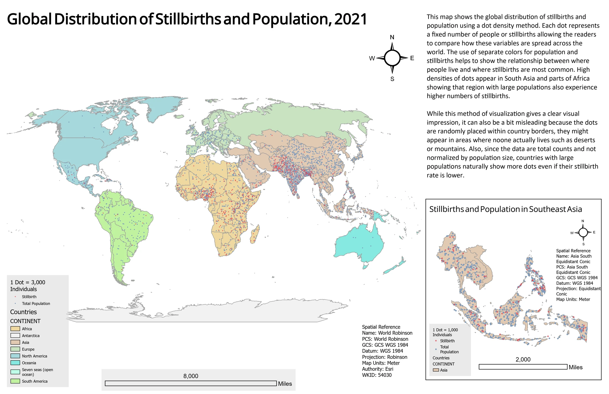

Cartography
Stillbirths and population
I wanted to examine a problem in comparing national health totals: a country can dominate a count map partly because it has more people. I used UNICEF data to see how the picture changed when I showed counts, divided stillbirths by total population, and changed the symbol method.
- Mapped year
- 2021
- Data source
- UNICEF statistical tables
- Geographic unit
- Country
- Tools
- ArcGIS Pro, Microsoft Excel, Dot density, Graduated and proportional symbols
Comparing symbol methods in Asia


Compare which countries draw attention in the absolute count panel and in the two population adjusted panels. The denominator is total population, so the adjusted symbols are not mortality rates.
Inspect details: Comparing symbol methods in AsiaComparing totals with population adjusted values
I prepared the UNICEF table in Excel and joined it to Natural Earth country boundaries in ArcGIS Pro. Circle size represents stillbirths and colour represents neonatal deaths. I compared graduated circles grouped with Natural Breaks against continuously sized proportional circles.
The larger population countries are prominent in the counts. Dividing stillbirths by total population changes that balance, making some smaller countries more visible. For a reader comparing countries, the side by side views demonstrate why the denominator needs to be understood before drawing a conclusion.
Putting the regional view in context
The global dot map brings the stillbirth and population totals into one view. South Asia and parts of Africa stand out in the displayed pattern. I used a regional inset to make smaller countries easier to inspect and adjusted transparency where symbols overlapped.
The dots are randomly distributed within countries. They describe national totals spread over an area, not the locations of births or households.
Global dot density comparison


The dot pattern gives a global view of the national totals, with a closer view of Southeast Asia. Dots are not event locations, and the original dot values need a population unit check before numerical reuse.
Inspect details: Global dot density comparisonLimits of the comparison
These are cartographic comparisons, not estimates of health risk. The adjusted panels use total population rather than births, so they do not show stillbirth or neonatal mortality rates. The population source is also expressed in thousands, and the original dot legends do not resolve the conversion. I would check the working table and correct those labels before using the numerical values in a report.